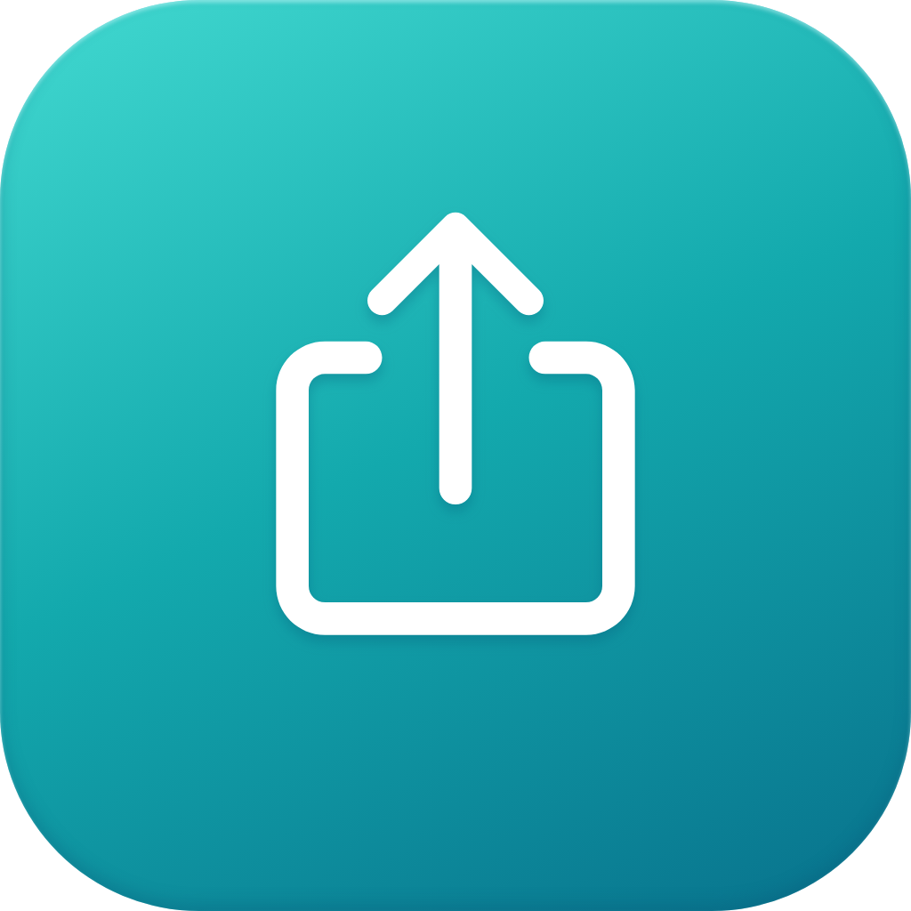

文件连接
正在读取服务状态
多用户共享
未开启
共享运行中，修改账号或授权前需关闭多用户共享。关闭会断开当前连接。
共享目录
访问账号
兼容性与配置
远程 WebDAV
上传与下载
单向复制，不同步删除。被覆盖的旧版本保留在目标目录的 .webdav-history 中，占用目标存储空间。

正在读取服务状态
未开启
共享运行中，修改账号或授权前需关闭多用户共享。关闭会断开当前连接。
单向复制，不同步删除。被覆盖的旧版本保留在目标目录的 .webdav-history 中，占用目标存储空间。